Uso das seguintes Tags
Exemplo:
| Nome | Idade | Profissão |
| Evelyn | 16 | Estudante |
| Sophia | 31 | Arquiteta |
Para fazer uma tabela assim você utilizará o seguinte código:
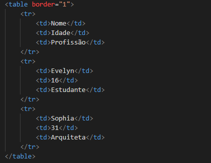As tags, Del e Ins significam 'Delete' e 'Insert'.
A tag Del desenha um traço encima do seu conteúdo.
Enquanto a Tag Ins sublinha o texto que esta dentro dela!
Exemplo:
Eu gosto de sorvete de chocolate morango!!!
Para usar essas tags você utilizará o seguinte código:
As Tags Sub e Sup significam 'subscript' e 'superscript' respectivamente, ou seja, desenha o texto acima ou abaixo do alinhamento vertical.
Exemplo:
Esse é um subscript
e esse é um superscript
Você usará o código da seguinte maneira:
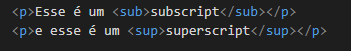Blockquote significa 'Bloco de Citação",e a sua função é exatamente essa, citar um trecho de outro lugar. Nesse exemplo estaremos citando uma frase de Shakespeare
Exemplo:
"O diabo pode citar as Escrituras quando isso lhe convém."
"Aceita o conselho dos outros, mas nunca desistas da tua própria opinião."
"É mais fácil obter o que se deseja com um sorriso do que à ponta da espada."
A Tag Q tem a mesma função do Blockquote porém reduzida, é usado quando se tem a necessidade de fazer citações menores.
Exemplo:
Está é uma citação curta
O código utilizado para essas tags são:
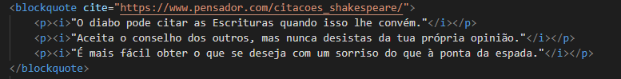 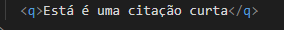A tag Abbr tem a função de explicar uma abreviação
Exemplo:
Obama é presidente dos EUA
Eu gosto de assistir TWD e de GOT
Para utilizar a tag usamos:
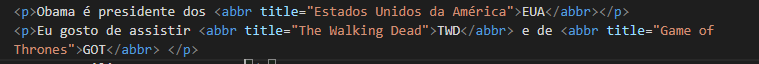A tag Cite serve para citar o autor da obra/trabalho apresentado.
Exemplo:

Céu Estrelado-Van Gogh
Para fazer iso utilizei:
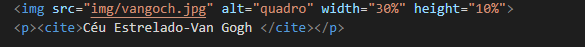A tag Address serve para inserir um endereço ao seu site.
Exemplo:
Site criado por: Evelyn Karen NeumannPara fazer isso usa:
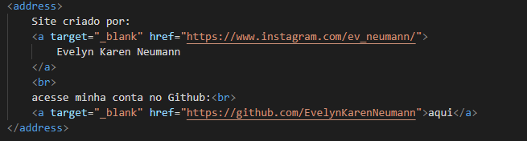A tag Bdo significa 'Bi-Directional Override' em tradução 'Substituição bidirecional', ela serve para dizer qual é a direção que deve ser exibido o texto
Exemplo de texto invertido:
oi, tudo bem?Da seguinte forma:
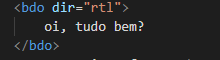A tag code serve para inserir um trecho de código em seu site
Exemplo:
A função selectAll() destaca todo o texto no
campo de entrada então o usuário pode, por exemplo, copiar ou deletar o texto.
Usamos assim:
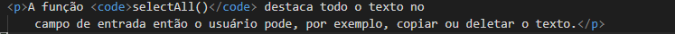A tag Pre serve para inserir um texto pré-formatado. Ou seja ela não ignora os espaços em branco do código, como é o comportamento padrão do HTML
Chocolate
sorvete
brownie
bala
cafá
chá
nescau
bolo bolacha biscoito
Utilizamos ela da seguinte forma:
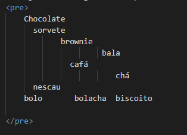A tag Kbd serve para definir mostrar teclas do teclado do usuário
Exemplo:
CTRL + A - Seleciona a pagina inteira!É feito isso da seguinte forma:
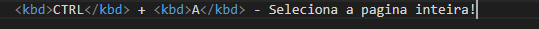